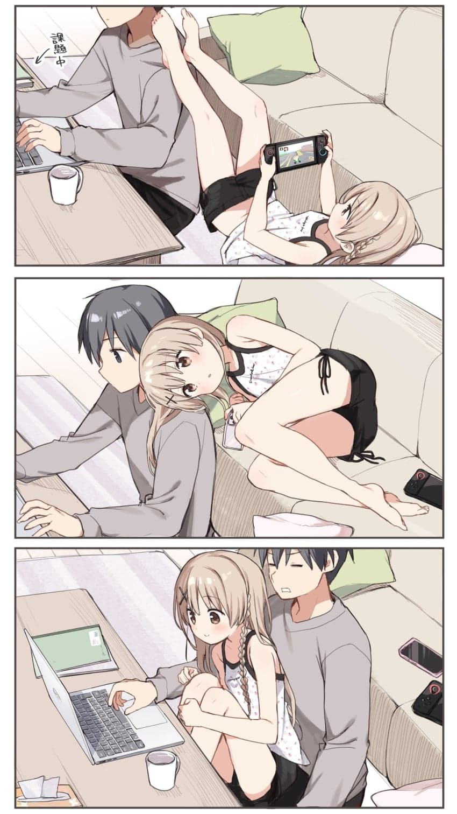

자꾸 일을 방해함

자꾸 일을 방해함
여동생과 고양이의 공통점은...
밥 먹을 때 빼고는 나를 찾지 않는다?
내가 찾아간다?
둘다 펀치를 날린다는거?
고양이는 똥 싸고나서 얼른 치우라고 나 찾음
때려야 말을 듣는다?
ㅈㄹㄴ
누나면 앞치마만 입고 요리해줌
참고로 난 누나 없음
그럼 내가 본 니네집에 지금 있는 그 누나는 누군데?
엄마
시도때도 없이 발기해서 힘듬
혼자 딸치고싶은데 못침 왜냐면...(더보기)
여동생이 있는데 왜 혼자 딸침ㅋㅋㅋㅋ
ㄹㅇㅋㅋ 같이 쳐야지

사촌동생이 초5까지 딱 저랬음..
옛날 사촌여동생이 ㄹㅇ 저랬는데... 옆에서 달라붙고 의자나 쇼파에 앉으면 가랭이 사이로 들가서 부비적거림 근데 나쁘진않았음
사촌여동생은 시간 지나면 자기 집에 가기 때문임
사춘기 전에는 친하게 지냈는데 사춘기이후로는 냉랭해지더라
애초에 어릴땐 가족들끼리 자주 봤는데 좀 커서는 잘안보니깐 어색해지고 남돼서 아쉬움

여동생이 집에있으면 ㅈ박는 이유
누나였으면 좋았을건데
고양이 아냐?